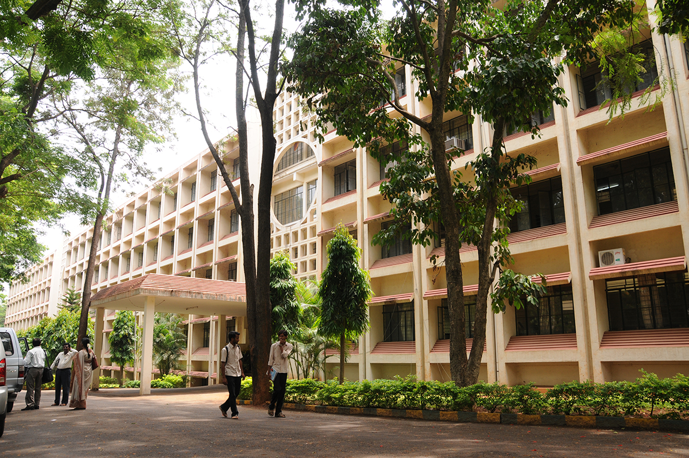

Information Technology builds tools to manipulate, organize, transmit, and store Information in Digital form. It amplifies Brainpower in a way analogous to that in which the Nineteenth Century Industrial Revolution”s Technology of Steam Engines, Metallurgy and Giant Power Tools multiplied muscle power. Information Technology builds the most all-purpose tools ever, Tools for thought. The future belongs to knowledge based Industries. Strength of a Country depends upon the best use of Information Technology in all walks of life.
“To impart knowledge to young aspirants to develop Information Technology based solutions for the Industrial and Societal needs”
Engineering Graduates will be able to:
PSO – 1: Able to apply appropriate techniques for storage of huge amount of data and ensuring its integrity.
PSO – 2: Choose appropriate method for data acquisition from real world and propose suitable solutions to solve problems.